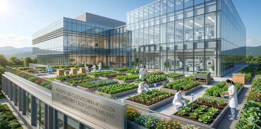

Sanatorio Del Parque es un centro médico polivalente para pacientes ambulatorios de mediana y baja complejidad. Contamos con todo el equipamiento necesario para el cuidado de tu salud y un staff médico de excelencia. En Sanatorio Del Parque, cada día es una oportunidad para brindar atención médica de excelencia. Nuestro equipo de profesionales altamente capacitados trabaja en conjunto para ofrecer un cuidado integral, humano y personalizado a cada paciente. Desde el momento en que ingresas a nuestras instalaciones, te sumerges en un ambiente cálido y acogedor, diseñado para tu bienestar. Con tecnología de vanguardia y un compromiso inquebrantable con la salud, estamos aquí para acompañarte en cada paso de tu camino hacia el bienestar.
Pedí tu turno llamando al (0261) 555-8271 / 555-4889 de lunes a viernes de 8 a 20hs. y sábados de 8 a 12hs.
Nuestro objetivo es brindarte un servicio de excelencia de la mano de profesionales altamente capacitados.
Cardiología
- Dra. Ordaz Mara
- Dr. Salvo Juan
- Dr. Benvenutto Guillermo
Clínica Médica
- Dra. Fernandez María
- Dr. Ravenna Emilio
- Dr. Aráuz Arturo
- Dr. Lampone Pablo
Gastroenterología
- Dr. Medina Gabriel
- Dr. Mercado José
- Dra. Aguilera Luz
- Dr. Perugia Juan
Nutrición
- Dr. Belvedere Rafael
- Lic. Presutti Roxana
Dermatología
- Dr. Cantoni Carlos
- Dr. Pintos Pablo
Ginecología
- Dra. Miller Claudia
- Dr. Laurenti Pedro
Sanatorio Ecosustentable
Proteger el medioambiente es también una forma de cuidar a nuestros pacientes, a quienes integran el Sanatorio y a la comunidad que nos rodea. Por eso, el Sanatorio del Parque fue concebido bajo un principio de eco-sustentabilidad.

- (Rx., Mamógrafo, Ecógrafo)
- Resonancia Magnética (SIEMENS Magnetom Essenza 1.5 Tesla)
- Mamografía Digital, Mamografía 3D y Tomosíntesis (General Electric Senographe Pristina)
- Ecografías y Eco Doppler (General Electric - Voluson S8 Tb22 - Voluson S8 y Voluson S6)
- Radiología Digital (Equipo GBA HF-550 Digital directo)
- Radioscopía en Quirófano (SIEMENS Cíos Select – arco en C)
- Lámpara de Hendidura
- Oftalmoscopio
- Retinoscopio
- OBI
- Microscopio Corneal Zeiss,
- Lensómetro
- Tonómetro.
Incorporamos tecnología robótica para cirugías con el robot Da Vinci Xi
El Sanatorio Del Parque, centrado en la atención integral del paciente y su familia, incorporó una nueva tecnología robótica para cirugías denominada Da Vinci Xi.
¿Cómo funciona esta tecnología?El cirujano opera al paciente desde una consola, con el apoyo del cirujano asistente y un instrumentador, desde la cual tiene control total del robot Da Vinci Xi, con una visión inmersiva 3D, y acceso a los 4 brazos robotizados que replican los movimientos del especialista.
¡Trabaja con nosotros!
Envianos tu Curriculum Vitae a
atracciondetalento@sdparque.com
Horarios
Centro Médico
Lunes a Viernes
8:00 - 20:00
Sábado
8:00 - 12:00
Laboratorio
Lunes a Sábado
8:00 - 14:00